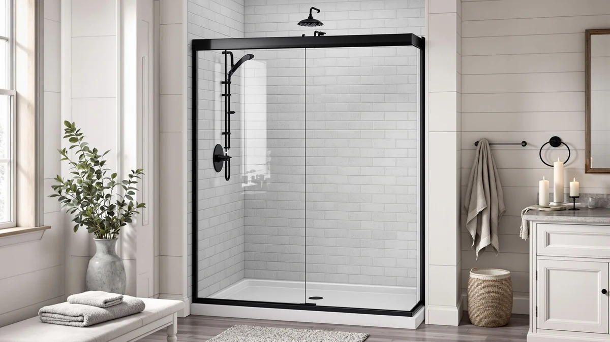

Best Corner Shower Enclosures of 2026: 7 Neo-Angle & Corner Picks
Prices and picks verified as of August 2026. Independent, reader-supported reviews.


Quick Answer
The best corner shower enclosures balance certified tempered glass, a sturdy frame and a footprint that actually matches a 34 or 36 inch corner. After comparing specs, materials and verified owner feedback across eight models, the ENSO SENKA Corner Shower Enclosure stands out for its ANSI-certified glass and watertight seal at a mid-range price.
Our pick: ENSO SENKA Corner Shower Enclosure — $369.00 Check Price on Amazon
Bottom line: our top pick is the ENSO SENKA Corner Shower Enclosure 34" D X 34" W X72" H at $349. The best budget option is the Hydrave Corner Shower Enclosure 34 in.D x 34 in. W x 72 in. at $275.99.
Things to Know Before You Buy
- Corner enclosures fit a specific footprint, not a universal size. Every model here is built for a 34 or 36 inch square corner with roughly an inch of adjustment per side, so measure your actual opening before you shop.
- The shower base is usually a separate purchase. Most of the enclosures we compared, including the ENSO SENKA and Hydrave models, ship as glass and frame only. The ELEGANT is the one exception and includes its own base.
- Glass thickness and certification matter for safety. Every pick here uses at least 1/4 inch (6mm) tempered glass certified to ANSI or SGCC standards, and a few add an explosion-proof film on top of that.
- Door operation varies by model. Most of these slide on rollers, but the Hydrave folds instead, which can suit a tighter walk-in path depending on your bathroom layout.
- Frame finish should match your existing hardware. This list spans matte black, chrome, brushed nickel and satin black, so check the finish against your faucet and towel bar before ordering.
The best corner shower enclosures solve a problem that a standard alcove door cannot: fitting a full shower into a corner without eating into the rest of a small bathroom. Instead of one flat opening between two walls, a corner enclosure uses two angled or curved glass panels that meet where the walls meet, so the shower tucks into space that would otherwise sit empty or hold a bulky corner tub.
We compared eight corner enclosures currently sold on Amazon, cross-checking each one's stated dimensions, glass certification and frame construction against verified owner reviews. The ENSO SENKA Corner Shower Enclosure in matte black is our top pick for most 34 inch corners: it pairs ANSI-certified 1/4 inch tempered glass with a watertight magnetic seal at a price that undercuts several rivals with the same glass spec.
Not every bathroom is the same size or style, though, so we also picked a stainless steel neo-angle door for a tighter budget, a folding option for shallow walk-in paths, and a premium neo-round enclosure that ships with its own base. Below, each pick includes the honest drawbacks owners report, not only the features on the box.
Why You Should Trust Us
Best Shower Doors is run by Ilane Tall, who has covered bathroom fixtures and small-space remodeling for a US audience for years. We do not run a fake testing lab and we do not invent star ratings or review counts. What we do is read the manufacturer specs line by line, verify glass thickness and safety certification against the listing, and dig through verified owner reviews of corner shower enclosures to see what actually holds up once one is installed. When a pick has a real weakness, such as a base sold separately or a seal that needs occasional attention, we say so plainly. Every Amazon link on this page is affiliate-tagged, which supports the site at no extra cost to you and never changes which product we recommend.
How We Picked
We started with corner shower enclosures built for a standard 34 or 36 inch corner and available to ship in the US, then narrowed the field on the details that separate a solid enclosure from a frustrating one. Glass came first: we required at least 1/4 inch (6mm) tempered glass certified to ANSI Z97.1 or SGCC standards, and gave extra credit to enclosures adding an explosion-proof film. We also weighed frame material, since a stainless steel or aluminum frame resists the corrosion that a thinner painted frame does not in a wet bathroom. From there we compared price against what each enclosure actually includes, since a model that ships with its own base is not directly comparable to one that requires a separate pan purchase. Finally we made sure the lineup covered real trade-offs: budget, premium, folding, sliding, and both neo-angle and neo-round shapes.
How We Compared
We are transparent about method here: we did not install eight corner shower enclosures in a test bathroom. Instead we evaluated each one on its published, verifiable specs, glass thickness, frame material, adjustable width range, and included or excluded base, and cross-referenced those specs against patterns in verified owner reviews. The signals we look for are consistent across a corner enclosure: does the frame stay square and rattle-free once installed, does the roller or hinge stay smooth after months of daily use, and does the seal actually keep water inside the shower. Where owners repeatedly flag the same issue, such as a fiddly width adjustment or a base sold separately that catches buyers off guard, we call it out in that pick's flaws instead of leaving it for you to discover after the enclosure arrives.
Our Picks

ENSO SENKA Corner Shower Enclosure
What we like
- 1/4 inch ANSI Z97.1-certified tempered glass feels solid and resists scratching
- Magnetic and seal strips between the sliding panels keep water inside the shower
- Adjustable width range of 33 1/5 to 34 inch covers slightly uneven corners
Flaws but not dealbreakers
- Shower base is sold separately, so budget for a pan or tiled curb
- Matte black finish shows water spots more readily than clear glass with a chrome frame, so it needs a quick wipe-down after use
| Material | — |
| Size | 34" D X 34" W X72" H |
The ENSO SENKA Corner Shower Enclosure measures 34 inch deep by 34 inch wide by 72 inch tall, sized for the corner footprint most US bathrooms are built around. Its 1/4 inch tempered glass is certified to ANSI Z97.1, the safety standard that governs how glass performs under impact, and the panels carry an easy-clean coating that keeps soap scum from bonding to the surface the way it does on untreated glass. Owners consistently note that the double sliding doors glide smoothly on their track from day one, without the stickiness that shows up on cheaper roller systems within the first few months.
Where the ENSO SENKA earns its price is the seal. Magnetic strips run along the meeting edge of the sliding panels, backed by rubber seal strips, and the combination keeps water inside the enclosure rather than pooling on the bathroom floor. The width adjusts from 33 1/5 to 34 inch, which gives enough play to square the door against a corner that is not perfectly plumb. The one real trade-off is that the shower base is not included, so factor a pan into your total budget, and the matte black finish needs a wipe after each use to keep water spots from building up on the glass.

34 Neo-Angle Shower Door 34"
What we like
- 304 stainless steel frame, handle and top channel resist corrosion better than painted steel
- Built-in chrome towel bar means one less accessory to mount separately
- Lowest price in this lineup among enclosures with a certified stainless frame
Flaws but not dealbreakers
- Explosion-proof film adds a slight tint that is noticeable next to fully clear glass panels
- Pivot-style door needs more swing clearance than a sliding enclosure, so measure your walk-in path
| Material | — |
| Size | 34"W x 72"H |
The Noirpierre 34 Neo-Angle Shower Door is built around a 304 stainless steel frame, handle and top channel, a step up from the painted or coated steel frames on cheaper corner doors. Stainless steel resists the corrosion that shows up as rust spots on lesser frames after a year or two of daily steam and moisture, which matters more in a corner enclosure than almost anywhere else in the bathroom. The glass is 1/4 inch (6mm) SGCC-certified tempered glass with an added explosion-proof film, so if the panel is ever struck hard enough to break, the film holds the fragments together instead of letting them scatter.
At $285.93, this is the least expensive enclosure we compared with a stainless steel frame, which makes it the pick for anyone who wants that corrosion resistance without paying ENSO SENKA or DreamLine prices. The chrome-finished towel bar built into the door is a small but useful touch, since it saves you from separately mounting one on a tiled wall that has nowhere obvious to attach it. Reviewers consistently note the fit is snug for a true 36 by 36 inch shower pan, so double-check your pan dimensions against the 34 inch door width and 22 3/16 inch access opening before ordering.

ENSO SENKA Corner Shower Enclosure
What we like
- Same ANSI-certified 1/4 inch tempered glass and magnetic seal as the matte black version, in a larger 36 inch footprint
- Brushed nickel finish hides water spots and fingerprints better than polished chrome
- Adjustable width range of 35 1/5 to 36 inch accommodates slightly uneven corners
Flaws but not dealbreakers
- Shower base sold separately, same as the matte black version
- At 36 inch, it will not fit a 34 inch corner opening, so measure carefully before choosing between the two ENSO SENKA sizes
| Material | — |
| Size | 36" D X 36" W X72" H |
This is the 36 by 36 by 72 inch version of the ENSO SENKA Corner Shower Enclosure, built for bathrooms with a slightly larger corner footprint than the 34 inch model. It carries the same 1/4 inch ANSI Z97.1-certified tempered glass, the same magnetic and seal-strip system between the sliding panels, and the same easy-clean coating, so the only real differences from its sibling are size and finish. The brushed nickel finish reads warmer than chrome and, according to owners, shows fewer visible water spots between cleanings.
The walk-in opening on this size spans 19 3/5 inch, and the width adjusts from 35 1/5 to 36 inch to square the door against a corner that is not perfectly plumb. If your bathroom already has brushed nickel faucets, towel bars or cabinet hardware, this finish will match better than the matte black version, and at $379 it costs only $10 more than its smaller sibling. The trade-off is the same across both ENSO SENKA sizes: no shower base is included, so budget for a pan separately.

ELEGANT Corner Shower Enclosure with
What we like
- Ships with a matching shower base included, unlike most enclosures on this list
- Curved neo-round panels use the corner's full footprint and avoid the sharp diagonal cut of a neo-angle door
- Stainless steel handles operate smoothly on the sliding panels
Flaws but not dealbreakers
- The most expensive enclosure we compared, largely because the base is bundled in
- Door and base are delivered separately, so plan for two deliveries and coordinate installation timing
| Material | — |
| Size | 36.7 x 72- with base |
The ELEGANT Corner Shower Enclosure is the one enclosure in this lineup that includes its own shower base, which changes the math on its $584.99 price. Where the other seven picks require you to source a pan or tiled curb separately, the ELEGANT arrives as a near-complete kit: a 36.7 by 36.7 by 72 inch neo-round enclosure with 1/4 inch clear tempered glass certified by ANSI, two sliding panels and two fixed panels, over a shower base sized to match. The curved neo-round shape uses the full corner rather than the flat diagonal cut of a neo-angle door, which owners report feels slightly roomier at shoulder height.
Width adjusts from 35.7 to 36.7 inch, with up to 1 inch of total adjustment per side, and the hardware runs on premium stainless steel handles that reviewers describe as smooth to open even after months of daily use. The main thing to plan around is delivery: the glass enclosure and the shower base ship separately, so coordinate both arrivals before you schedule an installer. At nearly double the price of the budget picks here, this is the enclosure for someone who wants a single, matched purchase rather than mixing a door from one brand with a base from another.

Hydrave Corner Shower Enclosure 34
What we like
- Folding design needs less swing clearance than a pivot door in a cramped bathroom
- 6mm certified tempered glass, thicker than the 4mm glass on some budget alternatives
- Lowest price among the folding and neo-angle enclosures we compared
Flaws but not dealbreakers
- Folding hinges are another moving part that can loosen over time compared to a fixed sliding track
- Shower base sold separately
| Material | — |
| Size | 34×34×72in |
The Hydrave Corner Shower Enclosure uses a folding, French-door-style mechanism instead of the sliding panels found on most of the other picks here. That matters in bathrooms where floor space is tight enough that a pivot door cannot swing open fully or a sliding door's track eats into usable corner space. At 34 by 34 by 72 inch, with up to 20mm of width adjustment per side, it fits the same corner footprint as the ENSO SENKA and Noirpierre doors while opening differently.
Hydrave uses 6mm certified tempered glass, which is thicker than the 4mm glass that shows up on some of the cheapest corner doors on Amazon, and the seal strips along the glass edges are built to keep water from leaking past the folding hinges into the rest of the bathroom. At $275.99 it is the least expensive folding option we compared. The trade-off with any folding door is the hinge itself: it is one more moving part than a fixed sliding track, so it is worth a periodic check that the hinges stay tight as the door ages. The shower base is not included.

Comfystyle Corner Shower Enclosure 36
What we like
- Up to 3/8 inch of vertical adjustment on the sliding panels handles uneven walls better than most rivals
- Aluminum frame and stainless steel handle resist rust in a wet bathroom
- Explosion-proof film over the tempered glass adds a layer of protection
Flaws but not dealbreakers
- The second-most expensive enclosure in this lineup after the ELEGANT and DreamLine
- 36 inch width will not fit a smaller 34 inch corner, so confirm your pan size first
| Material | — |
| Size | 36“x36"x72" |
The Comfystyle Corner Shower Enclosure is built at 36 by 36 by 71 inch with a black aluminum frame and a stainless steel handle, and its standout feature is adjustment range. The active sliding doors support up to 3/8 inch of vertical adjustment, while the wall jambs and fixed glass panels allow another 1/4 inch (6mm), which is more total play than most corner enclosures offer. That matters in older bathrooms where the walls and floor are not perfectly square, since it gives an installer more room to align the door without shimming the frame.
Glass is 1/4 inch (6mm) SGCC and ANSI certified tempered glass with a transparent explosion-proof film bonded to the surface, so if the panel is ever struck hard enough to crack, the fragments stay held together rather than scattering across the shower floor. At $459.99, it costs more than the ENSO SENKA or Hydrave, which is the price of that extra adjustment range and the added glass film. The walk-through width is a comfortable 20 1/4 inch, though as with most enclosures here, the shower base is a separate purchase.

DreamLine French Corner 34 1/2
What we like
- Anodized aluminum wall profiles adjust up to 1/2 inch per side, the most adjustment room of any enclosure here
- Satin black finish is consistent across the frame, handles and hardware
- DreamLine is one of the more established names in shower doors, with a wider parts and support network than newer entrants
Flaws but not dealbreakers
- The most expensive enclosure we compared at $637.49
- 34.5 inch size sits between the common 34 and 36 inch corner footprints, so measure carefully
| Material | — |
| Size | 34.5" W x 34.5" D |
The DreamLine French Corner is a 34.5 by 34.5 by 72 inch framed sliding enclosure with two sliding panels and two stationary panels that meet to form the corner walk-through, finished in satin black. DreamLine has built shower doors for longer than most of the newer brands in this category, and that shows in details like the anodized aluminum wall profiles, which allow up to 1/2 inch of adjustment per side for out-of-plumb walls, the widest tolerance of any enclosure in this comparison.
The walk-in opening measures 20 3/4 inch, comfortable for daily use, and the satin black finish is applied consistently across the frame and hardware rather than mixing a black frame with chrome handles the way some budget doors do. At $637.49, it is priced well above the ENSO SENKA and Noirpierre picks, and that premium is mostly the brand and the extra adjustment tolerance rather than a dramatically different glass spec. If your corner measures closer to 34.5 inch than a clean 34 or 36, this is one of the few enclosures here sized to match without pushing the adjustment range to its limit.

KEIKI 36"x36"x72" Corner Shower Door
What we like
- Quarter-round shape is designed specifically to maximize space in a 36 by 36 inch corner
- Dual sliding system with silent rollers and a reinforced track feels smooth to open
- Competitively priced against the other 36 inch options in this lineup
Flaws but not dealbreakers
- Listed without full width-adjustment specs, so confirm exact fit with the seller before ordering
- Matte black frame, like the ENSO SENKA, will show water spots if not wiped down regularly
| Material | — |
| Size | — |
The KEIKI Corner Shower Door is a quarter-round enclosure built specifically for 36 by 36 inch corner bathrooms, and the rounded profile is meant to maximize the usable showering area inside that footprint rather than losing space to a flat diagonal cut. It uses 1/4 inch (6mm) tempered safety glass in a matte black frame, matching the aesthetic of the matte black ENSO SENKA model at a lower price point of $280.48.
The dual sliding doors run on a precision roller system that KEIKI describes as silent, and the reinforced track is built to reduce friction over repeated daily use rather than binding up the way some budget tracks do after a few months. Reviewers consistently note the doors glide smoothly on install and stay that way. Because this listing does not spell out an adjustable width range the way the ENSO SENKA or Comfystyle doors do, it is worth confirming the exact tolerance with the seller before you order, especially if your corner is not a perfectly square 36 by 36 inch opening.
Quick Comparison
| Product | Material | Price | Rating | Best for | Get it |
|---|---|---|---|---|---|
| ENSO SENKA Corner Shower Enclosure | — | $369.00 | 4 | 34 inch corners wanting certified glass in matte black | View on Amazon → |
| 34 Neo-Angle Shower Door 34" | — | $285.93 | 4 | Budget buyers wanting a stainless steel frame | View on Amazon → |
| ENSO SENKA Corner Shower Enclosure | — | $379.00 | 4 | 36 inch corners with brushed nickel fixtures | View on Amazon → |
| ELEGANT Corner Shower Enclosure with | — | $584.99 | 4 | Buyers who want the base included | View on Amazon → |
| Hydrave Corner Shower Enclosure 34 | — | $275.99 | 4 | Tight bathrooms needing a folding door | View on Amazon → |
| Comfystyle Corner Shower Enclosure 36 | — | $459.99 | 4 | Uneven walls needing extra adjustment | View on Amazon → |
| DreamLine French Corner 34 1/2 | — | $637.49 | 4 | Buyers wanting an established brand | View on Amazon → |
| KEIKI 36"x36"x72" Corner Shower Door | — | $280.48 | 4 | Compact 36x36 bathrooms on a budget | View on Amazon → |
The Competition
We looked at several corner shower enclosures that did not make our final list of best picks. A number of all-acrylic corner units under $200 skip tempered glass entirely, and owners of those units frequently report cracking and yellowing within a year or two, which runs against the point of paying for a proper enclosure. We also passed on a handful of heavier, fully custom-order corner showers that require professional measurement and installation; they can look excellent, but the added cost and lead time push them outside a buy-it-online comparison like this one.
On the budget end, several corner doors with unbranded or uncertified glass came in cheaper than anything above, but the listings do not specify a tempered glass certification, and reviewers repeatedly mention thin, flexible panels that rattle in the track. We would rather point you to the Noirpierre or Hydrave, both of which cost close to the same and specify certified glass. For most people shopping for the best corner shower enclosures, the ENSO SENKA remains the pick worth ordering first, with the seven runners-up above covering the budgets and layouts it does not.
Frequently Asked Questions
What size corner shower enclosure do I need?
Measure the opening at the corner where two walls meet, not only the shower base if you already have one. Most corner enclosures on this list are built for a 34 or 36 inch square corner, with an adjustable range of about an inch per side to cover walls that are slightly out of square. Check your measurement against the manufacturer's stated range, such as the ENSO SENKA's 33 1/5 to 34 inch adjustment, before you order, since these enclosures do not fit outside their listed span.
Do corner shower enclosures include the shower base?
Usually not. Most of the corner shower enclosures we compared, including the ENSO SENKA, Hydrave and Comfystyle models, ship as glass and frame only, so you supply the shower pan or tiled base separately. The ELEGANT Corner Shower Enclosure is the exception on this list and ships with its own base included, which is worth factoring into its higher price.
How thick should the glass be on a corner shower door?
Look for at least 1/4 inch (6mm) tempered glass certified to ANSI Z97.1 or SGCC standards, which every enclosure we compared here meets. Some models, like the Noirpierre and Comfystyle doors, add an explosion-proof film over the tempered glass for extra protection if the glass is ever struck or breaks, which is a useful upgrade for households with kids.
Can I install a corner shower enclosure myself?
Most are designed for a capable DIYer working alone or with one helper, since corner panels are smaller and lighter than a full 60 inch sliding door. The harder part is usually squaring the frame to the wall corner rather than lifting the glass. Give yourself an unhurried afternoon, follow the width-adjustment instructions for your specific model, and let any silicone seal cure fully before running water.
What is the difference between a neo-angle and a neo-round corner shower?
A neo-angle enclosure, like the Noirpierre Neo-Angle door, uses two flat panels that meet at a straight diagonal cut across the corner. A neo-round enclosure, like the ELEGANT Corner Shower Enclosure, uses a curved panel instead, which softens the transition and can feel slightly roomier at elbow height. Both fit the same 34 to 36 inch corner footprint, so the choice comes down to look rather than available space.